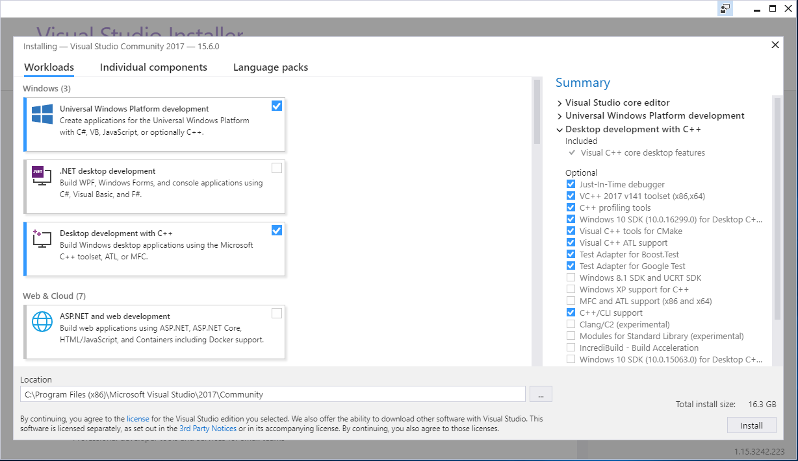
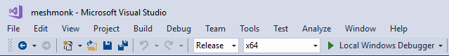
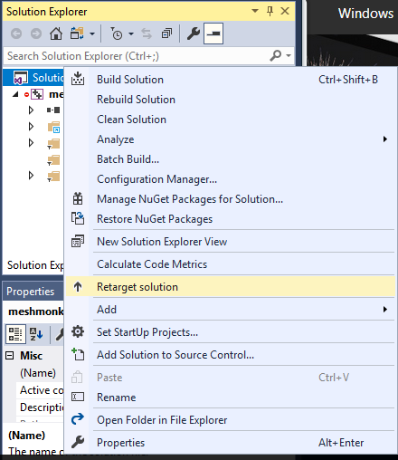
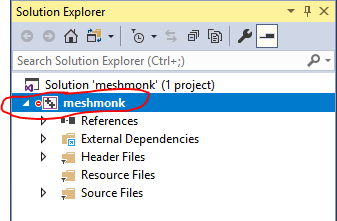

IMPORTANT NOTE: The instructions in this document pertain to an older, manual build system for MeshMonk. For building the meshmonk_cli tool and the meshmonk_shared library using the current CMake-based system (which includes vendored OpenMesh), please refer to the instructions in the main README.md file in the project root.
Build on Windows
This installation guide works on a Windows 10 64bit machine with the Visual Studio 2017 community edition. Ensure that you have the C++/CLI support installed.
Install Visual Studio 10
- Go to: https://www.visualstudio.com/downloads/
- Download Visual Studio Community 2017
- Double click to run the installer
- The installer will open

In the left pane click the checkboxes of Universal Windows Platform Development and Desktop development with C++ In the right page enable the C++/CLI support checkbox - Click on install. This will take while since it needs to download +16GB
Download meshmonk
- Create a folder called
c:\Users\<username>\Documents\GitHubif you do not already have it - Place downloaded/cloned meshmonk files from this GitHub repository into
c:\Users\<username>\Documents\GitHub\meshmonk
Install libraries
- OpenMesh 6.3: download the vs2015 64bit with apps static installer
- Eigen 3.3.4: download the source zip and extract in
c:\Users\<username>\Documents\GitHub\eigen-eigen-3.3.4
Configure Visual Studio project
Screencast on how to configure & build
As an alternative to building the library yourself, wou may use the precompiled version of 'meshmonk.lib' in the 'builds' folder of the meshmonk download.

Click on the image to watch the screencast on YouTube.
Import project
- File -> New -> Project From existing code
- Choose Visual c++
- Choose project file location as
c:\Users\<username>\Documents\GitHub\meshmonk - Type meshmonk as name
- Click Next
- Choose Project Type: Static Library (LIB) project
- Click Next
- Click Finish
Configure Solution
- Choose for Solution Configurations: Release
- Choose for Solution Platform: x64

Retarget Solution
- In the Solution Explorer
- Right-click on Solution 'meshmonk'
- Click on Retarget solution
- Choose a Windows SDK version higher than 10
- Click Ok

Exclude files from the project
- In the Solution Explorer window, find the following files, then right click each and select Exclude from project:
- In the Header Files:
- nanaflann.hpp
- In the Source Files:
- compute_correspondences.cpp
- compute_inlier_weights.cpp
- compute_nonrigid_transformation.cpp
- compute_normals.cpp
- compute_rigid_transformation.cpp
- downsample_mesh.cpp
- example.cpp
- mystream.cpp
- nonrigid_registration.cpp
- pyramid_registration.cpp
- rigid_registration.cpp
- scaleshift_mesh.cpp
- test_meshmonk_mexing.cpp
Configure properties
When you start configuring the properties you need to make sure that you have selected the meshmonk project. Otherwise the configuration is not applied to this projects. E.g:

Open Project -> Properties:
- Go to General -> Project Defaults -> Configuration Type: change to Static library(.lib). Press Apply. This changes the Linker configuration options to Librarian. If this didn't happen, please close and re-open the Properties
-
Go to C++ -> General -> Additional Include Directories: add the following directories, then press Apply.
C:\Users\<username>\Documents\GitHub\eigen-eigen-3.3.4 C:\Users\<username>\Documents\GitHub\meshmonk\vendor C:\Program Files\OpenMesh 6.3\includeThis includes Eigen, OpenMesh and Nanoflann.Note: adapt these paths to the paths where you've installed the source code and libraries.
-
Go to C++ -> Preprocessor -> Preprocessor Definitions: type _USE_MATH_DEFINES then press Apply
- Go to Librarian -> General -> Additional Dependencies -> edit:
C:\Program Files\OpenMesh 6.3\lib\OpenMeshCore.lib C:\Program Files\OpenMesh 6.3\lib\OpenMeshTools.libNote: adapt these paths as well to the paths where you've installed OpenMesh. - Hit Ok, then Apply, then Ok.
Build project
- Go to Build -> Rebuild Solution
This will build the static library. The result meshmonk.lib can be
found in C:\Users\<username>\Documents\GitHub\meshmonk\x64\Release.
Matlab
After you've build the library you will have to copy/paste the file to a folder which is in matlab path. Either the root folder of matlab or the relative root folder of the matlab files that you're working on.